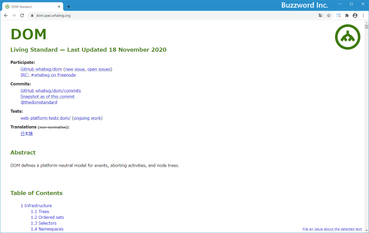
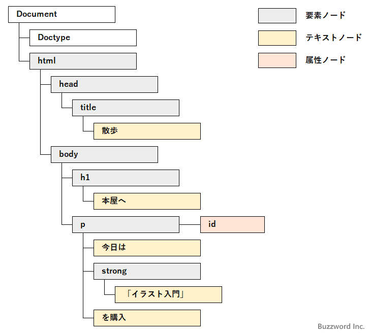
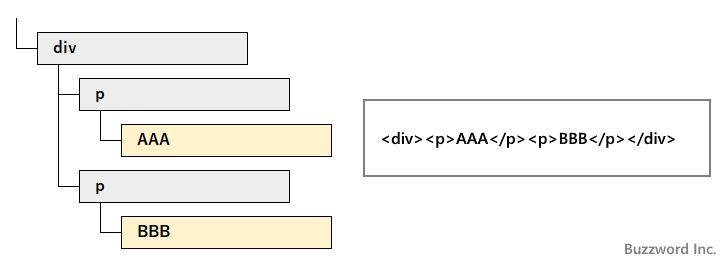
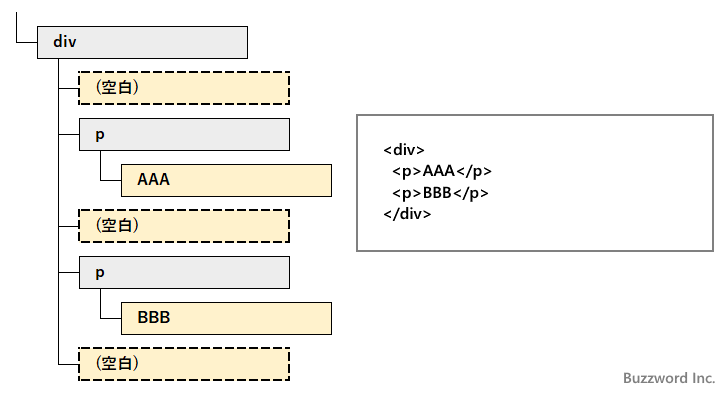
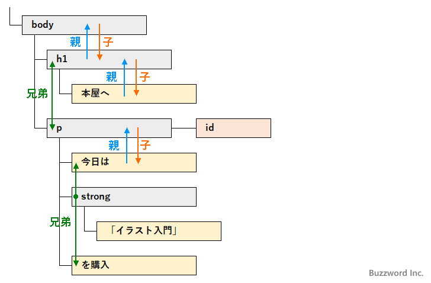

- Home ›
- JavaScript入門 ›
- DOM入門
DOMとは
DOM の具体的な利用方法についてみていく前に、 DOM とはどういった時にどのように利用できるのかなど DOM に関する基本事項について簡単に解説します。
DOMとは
DOM とは Document Object Model の略で HTML や XML 文書を取り扱うための API です。 DOM は標準化団体である W3C で以前は標準化が行われていましたが、現在では WHATWG によって標準化が行われています。

DOM はドキュメントオブジェクトモデルという名前の通り、 HTML や XML のドキュメントに含まれる要素や要素に含まれるテキストのデータをオブジェクトとして扱います。そしてドキュメントをオブジェクトが階層的に組み合わされたものとして識別します。 そして DOM では JavaScript など色々なプログラミング言語などから、オブジェクトを扱うための API を提供しています。
DOM ではドキュメントを構成するオブジェクトのことを「ノード」と呼びます。ノードはさらに種類に応じて「要素ノード」「テキストノード」「属性ノード」などに分類されます。
Web ページに記述した JavaScript から DOM を使用することで、 Web ページ上のテキストデータを読み込んだり、新しい要素を追加したり、 Web ページ上に表示されたボタンがクリックされた時にあらかじめ設定した処理を行うことができるようになります。
DOMの階層構造
DOM では対象となるドキュメントをノートの階層構造として扱います。例えば次のような HTML ページを例に見てみます。
<!DOCTYPE HTML> <html> <head> <title>散歩</title> </head> <body> <p id="xxx"> 今日は<strong>「イラスト入門」</strong>を購入 </p> </body> </html>
このような HTML ページがあった場合、 DOM では次のような階層構造のドキュメントツリーとして認識します。

最上位のノードは Document ノードです。この下にその他のノードが階層的につながっています。要素ノードは HTML ページの要素を表し、テキストノードは要素の中に記述されているテキストを表します。この他にもコメントを表すコメントノードなどいくつのノードの種類があります。
なおこの DOM ツリーでは省略していますが、実際には空白ノードというものが存在します。
空白ノード
HTML ページの中で記述された空白やタブ、改行など空白文字は、 HTML ページがブラウザで表示される時にすべてがそのまま表示されるのではなく決められたルールに従って無視されて表示されます。例えば空白の直後にある空白はすべて無視されたり、要素の前後にある空白はすべて無視されます。
ところが DOM の中では要素と要素の間に空白やタブ、改行文字がある場合は空白ノードとして扱われるため注意が必要です。
例として次のような 2 つの HTML 文を見てください。
<div><p>AAA</p><p>BBB</p></div>
<div> <p>AAA</p> <p>BBB</p> </div>
どちらもブラウザで表示した場合はまったく同じように表示されます。ところで DOM ツリーで見た場合には次のような違いがあります。


p 要素の前後にある空白や改行、タブなどの連続する空白文字は一つの空白ノードとして扱われます。(空白ノードはテキストノードのひとつです)。その為、ブラウザで表示した場合は同じでも HTML ページをどのように記述するのかによってノードが存在したりしなかったりすることになります。
あるノードの子ノードを全部取得する場合や、同じ階層にあるノードの次のノードを取得する場合などに空白ノードがあるかないかで処理が異なってくることがあるのでご注意ください。
ノード間の関係
ドキュメントに含まれる各ノードにはドキュメントツリーの位置に応じて親子関係や兄弟関係が存在します。

要素ノード(body)は要素ノード(h1)と要素ノード(p)の親ノードであり、要素ノード(h1)と要素ノード(p)は要素ノード(body)の子ノードです。また同じ親ノードを持つノードはそれぞれ兄弟ノードとなります。要素ノード(h1)と要素ノード(p)は兄弟ノードです。
DOM では特定のノードから親ノードや子ノードなどを取得して操作を行うことができます。
DOMを使った簡単な例
では最後に簡単な DOM を使ったサンプルを掲載しておきます。下記のボタンをクリックするとボタンの下に表示されているテキストの内容が変わります。
ここに表示されているテキストが変わります
DOM と JavaScript を組み合わせることで、簡単にこのようなことをすることができます。
-- --
DOM に関する基本的な事項について解説しました。
( Written by Tatsuo Ikura )

著者 / TATSUO IKURA
初心者～中級者の方を対象としたプログラミング方法や開発環境の構築の解説を行うサイトの運営を行っています。